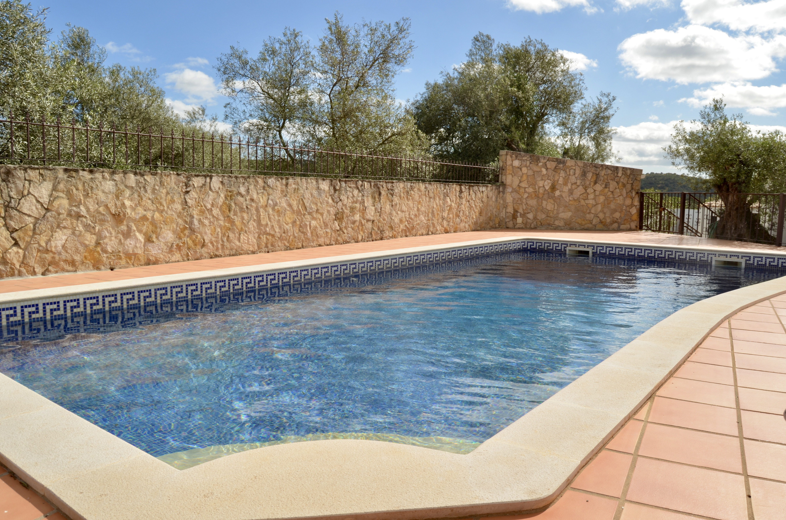
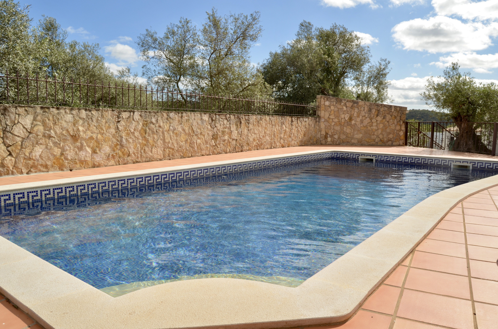

Sobre a Villa da Tôr
Esta moradia encantadora, localizada na aldeia de Tôr, a 5 minutos de Loulé, oferece um refúgio tranquilo e autêntico no Algarve. Com 4 quartos todos ensuite, é ideal para famílias ou grupos que apreciam sossego, natureza e proximidade com a cultura local.
Comodidades
- 4 quartos (todos com casa de banho privativa)
- 3 camas de casal e 1 cama twin
- Piscina com proteção de segurança para crianças
- 6 espreguiçadeiras para desfrutar do sol
- Área exterior com zona de refeições
- Perto de Loulé: supermercados, restaurantes e o famoso mercado de sábado
- Acesso fácil a atrações como a nascente de Benémola e a Quinta da Tôr
Localização
Na aldeia de Tôr, ideal para caminhadas, passeios de bicicleta e visitas a Loulé. Perto de supermercados, restaurantes e do mercado de sábado — um verdadeiro refúgio rural com todas as comodidades perto.